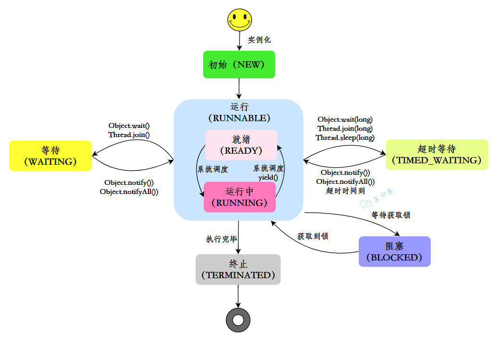

并发基础 - 1
参考文献
- https://javabetter.cn/sidebar/sanfene/javathread.html
- https://javaguide.cn/java/concurrent/java-concurrent-questions-01.html
- https://tech.meituan.com/2020/04/02/java-pooling-pratice-in-meituan.html
- https://www.zhihu.com/question/341005993/answer/128919891202
并行与并发的区别在于，并行是同时执行多个任务的能力，并发是程序交替执行多个任务的能力。
在单核CPU上的多线程程序与js在浏览器中的异步操作为并发但不并行的操作，多核CPU上的Web服务器与分布式系统上的微服务即为既并发又并行的场景。
异步和并发的区别在于，异步在意“等待”，允许任务在等待时不阻碍主线程；并发在乎“同时发生”，指多个任务在重叠的时间段内开始、运行和完成，但不一定在同一瞬间内完成。
异步和同步的区别在于，在发出调用后，异步返回结果前返回调用，而同步在没有得到结果前一直不反回调用。
概述
JDK 1.2 之前，Java 线程就是用户线程。JDK 1.2 后，一个 Java 线程直接映射到一个操作系统线程。当我们创建了一个 Thread 对象并调用 start() 方法时，JVM 会通过操作系统 API 请求内核创建一个对应的原生操作系统线程。Java 线程的调度完全委托给操作系统的调度器，以期实现真正的并行域提升性能。因此，在现代 Java 中，Java 线程就是通过 JVM 这个用户程序来管理的，但最终执行体是内核线程。
Java 的线程和普通线程一样，也需要存储一些私有数据，程序计数器用于线程切换后能恢复到正确是执行位置，虚拟机栈用于存储局部变量表和常量池引用等信息，本地方法栈用于存储虚拟机使用到的 native 方法。
创建
线程的创建有三种方式。
第一种是重写父类Thread的run()方法，并且调用start()方法启动线程。
1 | |
该方法的缺点是如果类已经继承了另外一个类，就不能再继承Thread类了。
第二种是实现Runnable接口的run()方法。并将实现类的对象作为参数传递给Thread对象的构造方法，最后调用start()方法启动线程。
1 | |
第三种需要重写Callable接口的call()方法，然后创建FutureTask对象，参数为Callable实现类的对象，紧接着创建Thread对象，参数为FutureTask对象，然后调用start()方法启动线程。
1 | |
该方法能获取线程的执行结果。
创建线程的时候，至少需要分配一个虚拟机线，在64位操作系统中，默认大小为1M，因此一个线程大约需要1M内存。当然，由于JVM、操作系统本身运行也需要内存，因此只给这么大的内存卡跑到理论值肯定是不够的。
Runnable 和 Callable 的区别如下
| 特性 | Runnable | Callable |
|---|---|---|
| 包路径 | java.lang.Runnable | java.util.concurrent.Callable |
| 方法签名 | void.run() | V call() throw Exception |
| 返回值 | void | 泛型 V |
| 异常处理 | 不能抛出异常 | 可以抛出受检异常 |
| 适用场景 | 简单的异步任务 | 需要返回结果或处理异常的任务 |
Runnable 在 Java 1.0 以来一直存在，但 Callable 在 Java 1.5 后才引入，就是为了处理 Runnable 不支持的用例。工具类 Executors 可以实现将 Runnable 对象转换成 Callable 对象（Executors.callable(Runnable task) 或 Executors.callable(Runnable task, Object result)）
调用start()的时候会执行run()方法，那为什么不直接调用run()方法？因为start()方法是启动一个新的线程，然后让这个线程去执行run()方法。而run()方法本身只是在当前线程中调用的一个普通方法。
调用start()后，线程进入就绪状态，等待操作系统调度；一旦调度执行，线程会执行其run()方法中的代码。
如果直接执行 run() 方法，就不会以多线程的方式去执行了。
调度
指令
| 类别 | 方法 | 说明 |
| 线程状态控制方法 | start() | 启动线程，使其进入就绪状态，等待CPU调度 |
| run() | 线程执行体，定义线程要执行的任务逻辑 | |
| 线程休眠 | sleep() | 线程休眠，参数填毫秒级时间 |
| 线程等待 | wait() | 必须在synchronized块中使用， 让当前线程进入WAITING或TIMED_WAITING状态， 需要被notify()或notifyAll()唤醒， 参数可指定毫秒级最长等待时间 |
| join() | 让当前线程等待目标线程执行完毕， 参数可指定毫秒级等待时间 | |
| 线程唤醒 | notify() | 唤醒单个等待线程 |
| notifyAll() | 唤醒所有等待线程 | |
| 线程让步与中断 | yield() | 线程让步，提示可让出CPU（但不保证立刻让出， 线程从RUNNING回到RUNNABLE状态 |
| interrupt() | 中断线程 | |
| isInterrupted() | 检查中断状态 | |
| interrupted() | 检查并清除中断状态 | |
| 线程优先级 | setPriority() | 设置线程优先级，参数从1到10， 优先级只是建议，不保证执行顺序 |
| getPriority() | 获取线程优先级 | |
| 守护线程 | setDaemon() | 设置守护线程， 当所有非守护线程结束时，JVM会自动退出，不管守护线程是否执行完毕， 参数为布尔值 |
| isDaemon() | 检查是否为守护线程 |
当线程A调用共享对象的wait()方法时，线程A会被挂起，直到
- 线程B调用了共享对象的
notify()方法或者notifyAll()方法； - 其他线程调用线程A的
interrupt()方法，导致线程A抛出InterruptedException异常。
notify()唤醒哪个正在wait()的线程是随机的。
由于 wait() 是让线程自动释放对象锁的，而每个对象都拥有对象锁，因此该方法自然是要操作对应的对象来执行，而非当前的线程，因此该方法不定义在 Thread 中。
但是，sleep() 方法并没有释放锁，只是用于暂停执行。
interrupt()方法能中断线程，但它只是改变中断状态，不会中断一个正在运行的线程，需要线程自行处理中断标志。若中断一个已经中断或正在等待的线程，就会抛异常。
守护线程的作用大多是为其他线程提供服务。
状态
和OS课上的不大一样，Java中管理线程有6种状态

- NEW 为初始状态，线程被创建出来但还没有
start() - RUNNABLE 为运行状态，线程被调用了
start()等待运行的状态
在操作系统层面，线程有 READY 和 RUNNING 状态，但在 JVM 层面，只能看到 RUNNABLE 状态 - BLOCKED 为阻塞状态，需要等待锁释放
- WAITING 为等待状态，表示该线程需要等待其他线程做出一些特定动作
- TIME_WAITING 状态，表示该线程可以在指定时间后自行返回
- TERMINATED 终止状态，表示该线程已经执行完毕
上下文切换
上下文是指线程在执行过程中自己的运行条件和状态，比如程序计数器，栈信息等。当线程从占用 CPU 状态退出时（终止运行除外），OS 需要保存当前线程的上下文以留待下次使用，并加载下一个将要占用的 CPU 线程上下文。这就是所谓的上下文切换。
通信
上文中提到的wait()和notify()之间的互动就是一种线程通信方式。除此之外，还有许多种通信方式。
阻塞队列
这是最常用的通信方式（毕竟用上消息队列就得上redis或者rabbit MQ了）。可以简单实现生产者消费者模式，也不用死记那两个锁的作用了。
常用的示例有ArrayBlockingQueue、LinkedBlockingQueue、PriorityBlockingQueue等。1
2
3
4
5
6
7
8
9
10
11
12
13
14
15
16
17
18
19BlockingQueue<String> queue = new ArrayBlockingQueue<>(10);
new Thread(() -> {
try {
String data = "message";
queue.put(data);
} catch (InterruptedException e) {
Thread.currentThread().interrupt();
}
}).start();
new Thread(() -> {
try {
String data = queue.take();
System.out.println("收到: " + data);
} catch (InterruptedException e) {
Thread.currentThread().interrupt();
}
}).start();信号量
依旧是经典的信号量和PV操作。控制并发访问资源的线程数量。1
2
3
4
5
6
7
8
9
10
11
12
13
14
15
16Semaphore semaphore = new Semaphore(5); // 最大5个许可
for (int i = 0; i < 10; i++) {
new Thread(() -> {
try {
semaphore.acquire(); // 获取许可
// 使用数据库连接
System.out.println(Thread.currentThread().getName() + " 使用连接");
Thread.sleep(2000);
} catch (InterruptedException e) {
Thread.currentThread().interrupt();
} finally {
semaphore.release(); // 释放许可
}
}).start();
}Semaphore可以用于流量控制，比如数据库连接池、网络连接池等。假如有这样一个需求，要读取几万个文件的数据，因为都是 IO 密集型任务，我们可以启动几十个线程并发地读取。但是在读到内存后，需要存储到数据库，而数据库连接数是有限的，比如说只有 10 个，那我们就必须控制线程的数量，保证同时只有 10 个线程在使用数据库连接。这个时候，就可以使用Semaphore来做流量控制。Exchanger 交换器
两个线程在同步点交换数据。一个线程调用exchange()方法时会阻塞，直到另一个线程也调用exchange()方法，然后两个线程交换数据后继续执行。1
2
3
4
5
6
7
8
9
10
11
12
13
14
15
16
17
18
19
20
21Exchanger<String> exchanger = new Exchanger<>();
new Thread(() -> {
try {
String data = "来自线程1的数据";
String response = exchanger.exchange(data);
System.out.println("线程1收到: " + response);
} catch (InterruptedException e) {
Thread.currentThread().interrupt();
}
}).start();
new Thread(() -> {
try {
String data = "来自线程2的数据";
String response = exchanger.exchange(data);
System.out.println("线程2收到: " + response);
} catch (InterruptedException e) {
Thread.currentThread().interrupt();
}
}).start();Exchanger可以用于遗传算法，也可以用于校对工作，比如我们将纸制银行流水通过人工的方式录入到电子银行时，为了避免错误，可以录入两遍，然后通过Exchanger来校对两次录入的结果。
多个线程可以通过volatile关键字和synchronized关键字来实现通信。volatile关键字确保变量的可见性，synchronized关键字确保线程之间的互斥访问。
volatile可以用于修饰成员变量，告知程序任何对该变量的访问均需要从共享内存中获取最新值，而不是从线程的本地缓存中获取。
synchronized关键字可以用于修饰方法或代码块，确保同一时刻只有一个线程可以访问被修饰的代码，从而避免数据竞争和不一致的问题。
CompletableFuture类提供了一种更简洁和强大的方式来处理异步编程和线程间通信。它允许线程在完成计算后将结果传递给其他线程，并支持链式调用和组合多个异步任务。
1 | |
保证线程安全
Java中提供了许多方法来保证线程安全。
- 可以在代码块或方法上使用
synchronized关键字。 - 使用
ReentrantLock类来显式地加锁和解锁，这种锁还支持并发重入。 - 保证变量的可见性，可以使用
volatile关键字修饰变量。 - 使用
Atomic类（如AtomicInteger、AtomicLong等） - 对于线程独立的数据，可以使用
ThreadLocal类来存储和访问这些数据。 - 对于需要并发容器的地方，可以使用
ConcurrentHashMap、CopyOnWriteArrayList等线程安全的集合类。
一个int的变量为0，10个线程轮流对它进行++操作，循环一万次，结果会小于十万。原因是多线程环境下，++操作不是原子操作，可能会出现多个线程同时读取和写入变量的情况，导致数据丢失。
一般的++操作可以分解为三个步骤：
- 读取变量的当前值
- 对值进行加1操作
- 将新的值写回变量
在多个线程并发进行++操作时，可能会出现以下情况：
- 线程A读取变量的值为0
- 线程B读取变量的值也为0
- 线程A对值进行加1操作，得到1
- 线程B对值进行加1操作，得到1
- 线程A将1写回变量
- 线程B将1写回变量
最终变量的值为1，而不是预期的2。因此最后需要通过某种方式保证++操作的原子性，比如使用synchronized关键字、ReentrantLock类或者AtomicInteger类。
spring 中的 bean 注入需要实现单例
如果多个线程同时尝试创建实例，单例类必须确保只创建一个，并提供一个全局访问点。在多种实现单例类的方式中，饿汉式是一种比较直接的实现方式。
1 | |
饿汉式单例则在第一次使用时初始化单例对象，这种方式需要使用双重检查锁定来确保线程安全。
1 | |
ThreadLocal
ThreadLocal 提供线程本地存储机制，为每个线程创建变量的独立副本，从而避免多线程环境下的数据竞争问题。
对 ThreadLocal 的操作有4种方法：
set(T value)：设置当前线程的局部变量值。get()：获取当前线程的局部变量值。remove()：移除当前线程的局部变量值。initialValue()：提供初始值的方式，子类可以重写该方法。
应用场景
- 在 Web 应用中，存储用户的会话信息（即 Session）。
- 在数据库操作中，管理连接对象，确保每个线程使用独立的链接，避免冲突。
每个线程内部维护一个 ThreadLocalMap，用于存储私有变量。而 ThreadLocal 本身只是一个工具，用于操作 Thread 对象内部的 ThreadLocalMap。
当我们调用 threadLocal.set(value) 时，实际发生了以下事情
- 获取当前线程
Thread对象。 - 获取当前
Thread对象内部的ThreadLocalMap，若没有则创建一个。 - 以
threadLocal对象本身作为 Key，要存储的value作为 Value，存放到当前线程的ThreadLocalMap中。而这个 key 实际上是ThreadLocal对象的弱引用，但value作为真正 set 进去的值，是强引用。
当我们调用 threadLocal.get() 方法时，实际发生了以下事情
- 获取当前线程的
Thread对象。 - 获取当前线程
Thread对象内部的ThreadLocalMap。 - 以
threadLocal对象本身作为 Key，从ThreadLocalMap中取出对应的 Value 并返回。
当 ThreadLocal 对象被回收后，键值对中的 key 就变成了 null，但 value 的值作为强引用，仍然被键值对引用，仍然存在，且无法被清理，最终造成内存泄漏。
因此在登出等操作后，一定要手动 remove() 掉 ThreadLocalMap 中的键值对。
设置成弱引用的原因也比较简单。假设 ThreadLocalMap 中对 ThreadLocal 的引用的强引用。若 ThreadLocal 在外部已经没有被任何地方引用了，即应该被回收了，但是由于 ThreadLocalMap 中的键值对仍然强引用着这个 ThreadLocal 对象，导致该对象永远无法被回收，就会导致这个对象本身的内存泄漏。
其他
ThreadLocalMap使用数组结构，通过线性探测法解决哈希冲突。- 扩容前会先清理无效条目，当填充率达 2/3 时进行扩容（容量翻倍并重哈希）。
- 默认情况下，子线程无法继承父线程的
ThreadLocal，需使用InheritableThreadLocal实现继承，其原理是在创建子线程时拷贝父线程的InheritableThreadLocalMap。
线程池
基本信息
线程池是用来管理和复用线程的工具，可以提高系统的性能和资源利用率。Java 中线程池的核心实现为 ThreadPoolExecutor，并提供了 Executor 框架来简化线程池的创建和管理（但不推荐使用）。
在创建线程时可以显式指定线程组
1 | |
工作流程
- 线程池通过
submit()或execute()方法接收任务。 - 线程池首先检查核心线程数是否已满，若未满则创建新线程执行任务。
- 若核心线程数已满，则将任务放入任务队列中。
- 若任务队列已满且线程数未达最大值，则创建新线程执行任务。
- 若任务队列已满且线程数已达最大值，则根据拒绝策略处理任务。
- 线程执行完任务后，若线程数超过核心线程数且空闲时间超过
keepAliveTime，则终止该线程
graph TD
A[execute或submit] --> B{核心线程数未满?}
B -->|是| C[创建新线程执行任务]
B -->|否| D{任务队列未满?}
D -->|是| E[将任务放入任务队列]
D -->|否| F{最大线程数未满?}
F -->|是| G[创建新线程执行任务]
F -->|否| H[执行拒绝策略]
核心参数
corePoolSize：核心线程数，线程池中始终保持的线程数量。maximumPoolSize：最大线程数，线程池中允许的最大线程数量。workQueue：任务队列，用于存储等待执行的任务。
以上三个参数最重要，基本决定了线程池对于任务的处理策略。keepAliveTime：线程空闲时间，超过该时间的非核心线程将被终止。unit：时间单位，keepAliveTime的时间单位。threadFactory：线程工厂，用于创建新线程。handler：拒绝策略，当任务无法执行时的处理方式。
提交任务
execute()用于提交不需要返回值的任务。当任务执行过程中抛出异常时，会导致执行该任务的线程中止，但线程池会创建一个新的工作线程来替代它，确保线程池的正常运行。submit()用于提交需要返回值的任务，返回一个Future对象。当任务执行过程中发生异常时，异常会被封装在Future对象中，不会立即抛出。只有在调用Future.get()方法时，才会抛出执行时遇到的异常。
因此，使用 submit() 方法时，务必通过 Future.get() 来获取执行结果或捕获可能发生的异常，否则任务中的异常可能会被忽略。
Future 类用于异步计算。其主要实现了以下4种功能
boolean cancel()取消任务boolean isCancelled()查看是否已取消任务boolean isDone()查看是否已经执行完成V get(long timeout, TimeUnit unit)获取任务执行结果，超时未完成则抛出异常
然而，Future 类在实际使用过程中也存在一些局限，比如不支持异步任务的编排组合，获取结果的 get() 方法为阻塞调用等。因此在 Java 8 中引入了 CompletableFuture 类，提供了函数式编程和异步编排组合等功能。
若一个任务需要等待多个任务执行之后执行，这种需求就很适合通过 CompletableFuture 实现。
1 | |
使用该类时，可以使用 whenComplete 方法在任务完成时触发回调函数，以正确处理异常；使用 exceptionally 处理异常并重新抛出；使用 handle 方法处理正常的结果和异常，并返回一个新结果。
CompletableFuture 默认使用 ForkJoinPool 作为线程池。
拒绝策略
AbortPolicy：默认策略，抛出RejectedExecutionException异常CallerRunsPolicy：调用者运行策略，任务由调用者线程执行DiscardPolicy：丢弃策略，直接丢弃任务，不抛出异常DiscardOldestPolicy：丢弃最旧任务策略，丢弃任务队列中最旧的任务，然后尝试执行当前任务
CallerRunsPolicy 适用于保证任何一个任务请求都要被执行的时候。但是，如果走到 CallerRunsPolicy 的任务是个非常耗时的任务，且处理提交任务的线程是主线程，可能会导致主线程阻塞，影响程序的正常进行，甚至导致线程池阻塞，最后堆到其他线程的任务越来越多，导致 OOM。
因此一般是把线程池外的任务存到 MQ 或阻塞队列中。此时需要实现 RejectedExecutionHandler 接口自定义拒绝策略。
关闭方式
shutdown()：等待所有任务执行完毕后关闭shutdownNow()：立即关闭，尝试中断所有正在执行的任务，并忽略队列中未执行的任务
线程数安排多少个比较合适呢？一般需要分析线程池执行的任务类型是CPU密集型还是IO密集型。
CPU 密集型：线程数 ≈ CPU核心数 + 1
目标是最小化线程上下文切换，+1 作为备用线程处理可能的阻塞IO 密集型：线程数 ≈ CPU核心数 × 2～3
因线程经常在IO操作时阻塞，可配置更多线程提高CPU利用率
实际配置需结合业务场景：CPU使用率低可能需增加线程数，CPU使用率高但吞吐量低可能需减少线程数。
常见的线程池
常见的线程池有4种
FixedThreadPool：固定大小线程池，适用于任务量较大且任务执行时间较长的场景。如IO密集型任务、数据库连接池等。
其线程池大小是固定的，默认使用LinkedBlockingQueue作为任务队列。其缺点是任务队列默认无界，可能会导致内存溢出（或者说会导致OOM）。CachedThreadPool：可缓存线程池，适用于任务量较大且任务执行时间较短的场景。如短时间内大量的文件处理或网络请求等。
其线程池大小不固定。空闲线程超过60秒会被终止，默认使用SynchronousQueue作为任务队列。其优点是线程池可以根据任务量动态调整大小，缺点是线程数没有上限，可能会创建大量线程，导致系统资源耗尽。SingleThreadExecutor：单线程线程池，适用于需要顺序执行任务的场景。如日志处理、定时任务等。
线程池只有一个线程，保证任务按顺序执行，默认使用LinkedBlockingQueue作为任务队列。其缺点是单线程可能成为性能瓶颈。ScheduledThreadPool：定时任务线程池，适用于需要定时或周期性执行任务的场景。如定时数据备份、定时清理缓存等。
线程池大小可配置，支持定时或周期性任务执行。默认使用DelayedWorkQueue作为任务队列。其优点是支持定时和周期性任务，缺点是线程数没有上限，可能会创建大量线程，导致系统资源耗尽。
这些线程池的默认拒绝策略均为 AbortPolicy。
状态管理
线程池的异常处理常见有四种方式
- 最简单的，
try-catch处理。 - 使用
Future对象的get()方法获取异常。
建议使用submit()的项目使用这种方式。 - 自定义线程池，重写
afterExecute()方法处理异常。
建议想要全局处理异常的项目使用这种方式。 - 使用
UncaughtExceptionHandler处理未捕获异常。
建议使用execute()的项目使用这种方式。
线程池有5种状态，并且它们之间严格按照状态流转规则流转。
graph TD
A[RUNNING] --> |shutdown|B[SHUTDOWN]
A-->|shutdownNow|C[STOP]
B --> |队列为空且工作线程数为0|D[TIDYING]
C --> |工作线程数为0|D
D --> |terminated|E[TERMINATED]
RUNNING 状态的线程池可以接收新任务，并处理阻塞队列中的任务；SHUTDOWN 状态的线程池不会接收新任务，但会处理阻塞队列中的任务；STOP 状态的线程池不会接收新任务，也不会处理阻塞队列中的任务，并且会尝试中断正在执行的任务；TIDYING 状态表示所有任务已经终止；TERMINATED 状态表示线程池完全关闭，所有线程销毁。
使用线程池提供的setter()方法就可以修改线程池的参数。
需要注意的是，调用 setCorePoolSize() 时如果新的核心线程数比原来的大，线程池会创建新的线程；如果更小，线程池不会立即销毁多余的线程，除非有空闲线程超过 keepAliveTime。
当然了，还可以利用 Nacos 配置中心，或者实现自定义的线程池，监听参数变化去动态调整参数。
应用
线程资源必须通过线程池提供，不应该在应用中自行显式创建线程。并且，线程池不应该使用 Executor 创建，更应该通过 ThreadPoolExecutor 构造函数的方式构建。因为使用 Executor 创建的四种线程池都有或多或少的问题。
ThreadPoolExecutor 默认不会回收核心线程。要是实在需要回收核心线程，可以考虑将 allowCoreThreadTimeout(boolean value) 设置为 true，这样就会回收空闲的核心线程了，其时间间隔由 keepAliveTime 指定。
核心线程在空闲时，会处于 WAITING 状态，当队列中有可用任务时，会唤醒被阻塞的线程，线程的状态会由 WAITING 状态变为 RUNNABLE 状态，之后去执行对应的任务。
要设计一个根据任务的优先级来执行的线程池，可以考虑使用 PriorityBlockingQueue 作为任务队列。当然，使用优先队列实现对任务的排序，传入其中的任务必须是具备排序能力的，因此需要提交到线程池的任务实现 Comparable 接口或 Comparator 接口。并且为了避免 OOM 问题，最好重写一下 offer 方法的逻辑，在元素数量超过指定值时返回 false。
线程池调优
- 根据任务类型设置核心线程数参数。
- 结合线程池动态调整的能力，在流量波动时通过
setCorePoolSize平滑扩容，或者直接使用DynamicTp实现线程池参数的自动化调整。 - 通过内置的监控指标建立容量预警机制。比如通过 JMX 监控线程池的运行状态，设置阈值，当线程池的任务队列长度超过阈值时，触发告警。